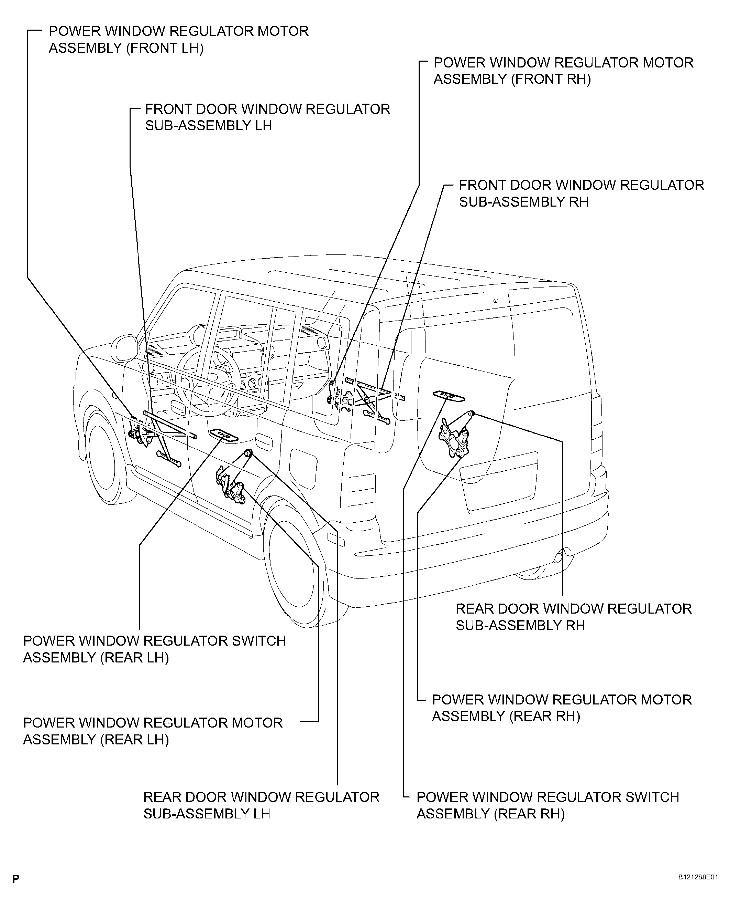
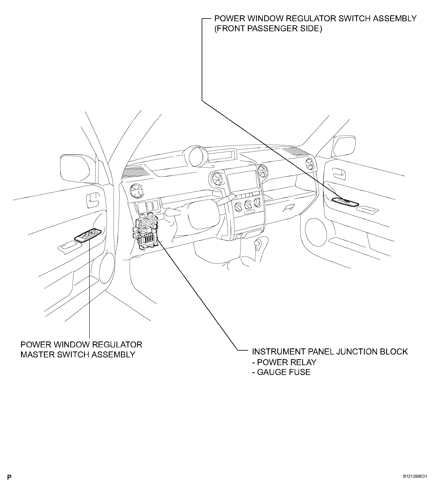

Parts Location
Fig 1: Identifying Power Window Control System Parts Location (1 Of 2)

Courtesy of © TOYOTA, LICENSE AGREEMENT TMS1002
Fig 2: Identifying Power Window Control System Parts Location (2 Of 2)

Courtesy of © TOYOTA, LICENSE AGREEMENT TMS1002